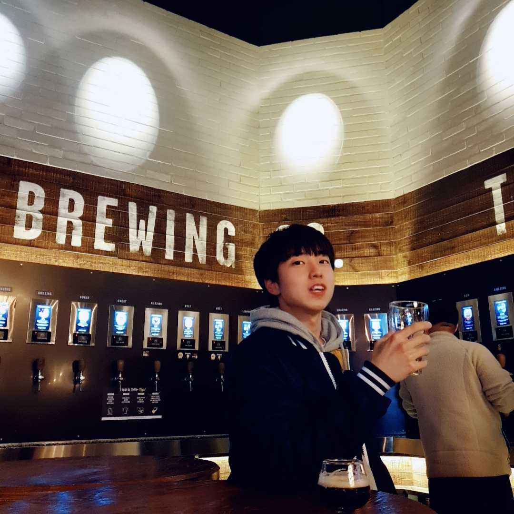
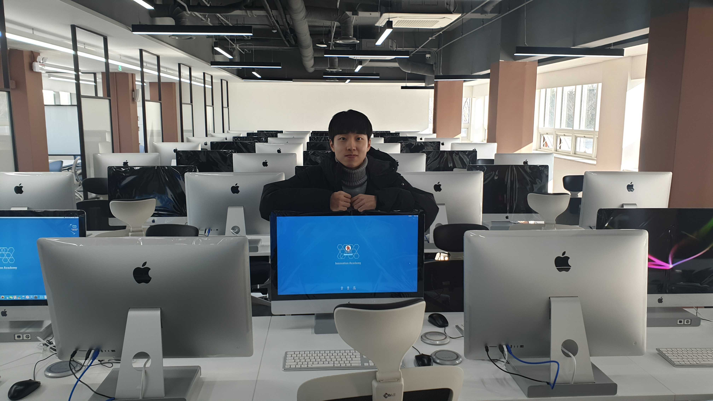

홈
자기소개
내 사진
현재 시각

20200321
42seoul동료들과 함께 수제맥주집을 다녀옴.
위치는 건대.
다양한 맥주를 맛볼 수 있는 동시에 여러 맥주를 원하는 만큼만 따라 마실 수 있어 좋았음

20191220
42seoul의 건물인 개포동 이노베이션 아카데미의 개소식에 참여함.
과학기술부장관, 주한프랑스대사관 등의 인사가 와서 큰 규모의 프로젝트라는 것을 실감할 수 있었음